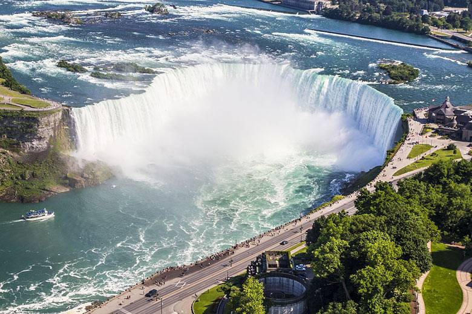
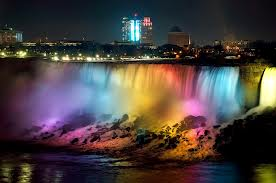
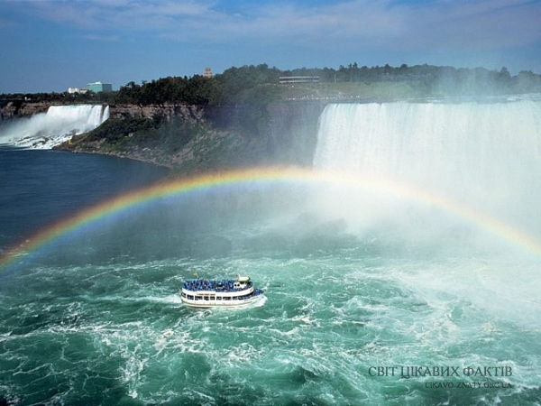

Знаменитому Ніагарському водоспаду близько 12 000 років. Формування Ніагарського водоспаду почалося наприкінці льодовикового періоду, і цей процес триває до сьогодні. Танення льодовиків утворило величезні прісноводні озера - Великі озера. Озеро Ері мчало вниз по схилу до озера Онтаріо. Бурхливі води прорізали річку і перетнули скелю, схили Ніагари. Вода почала бігти назад по річці і залишила фантастичний шлях, Ніагарський Джордж. Одним з багатьох захоплюючих аспектів Ніагарського водоспаду є об'єм води, що проходить через нього щодня. Завдяки регулюванню стоку та відведенню води для виробництва гідроелектроенергії, потік води певною мірою регулюється. Насправді, щосекунди через водоспад протікає понад 3160 тонн води, що дорівнює мільйонам галонів США і Канади разом узятих.
  